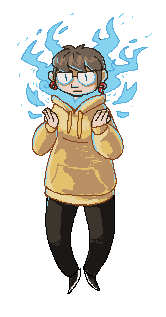

|

Hi, I'm Heather Williams, also commonly known as milokey. I draw a plethera of monsters and I also like to make comics. Most of my work can be traced back to influences in fantasy and folklore. My style is free range, jumping back and forth between comic book style inks to smooth and painterly. I’m primarily concerned with working under the themes of monsters and magic. I strive to make work that is inclusive and connects with people. I am a graduate of Minneapolis College of Art and Design with a degree. I earned my degree in Comic Art, because I have a need to tell stories.
|